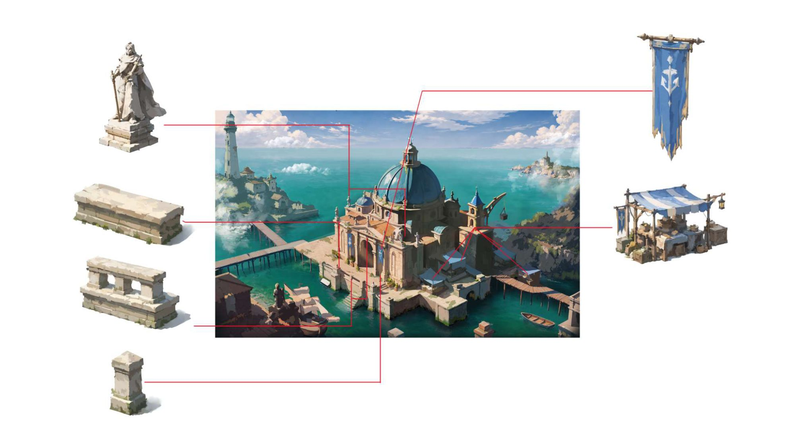
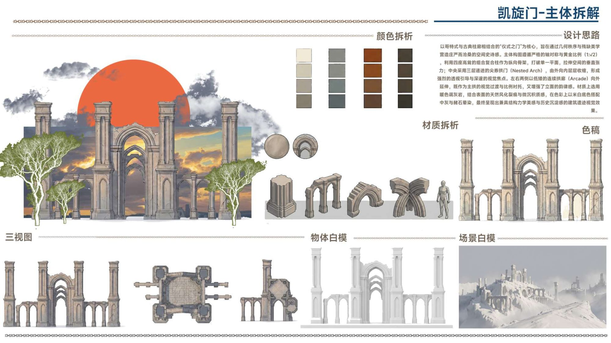
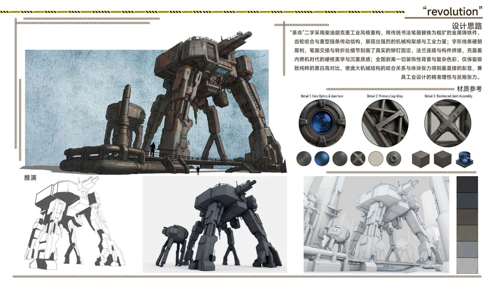
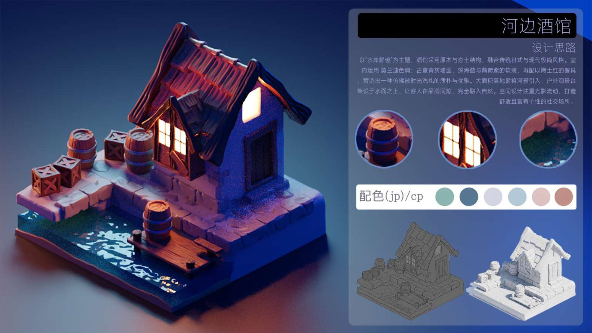
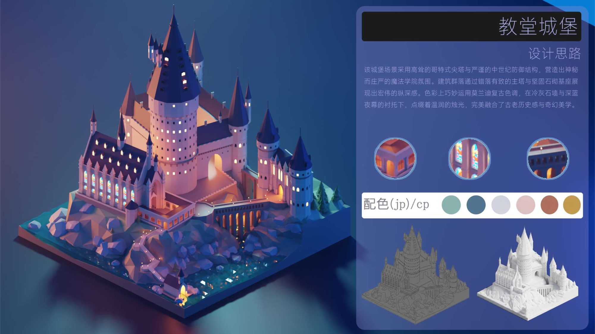
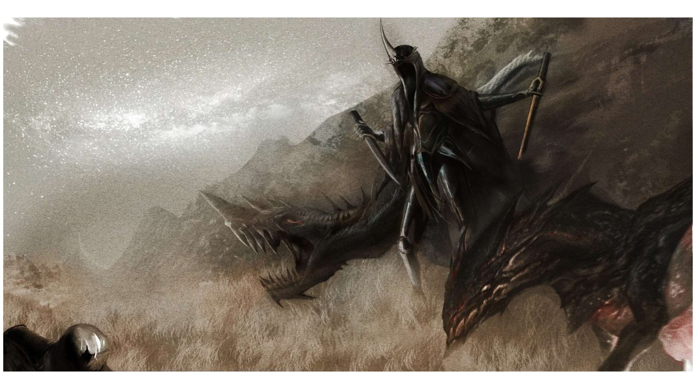
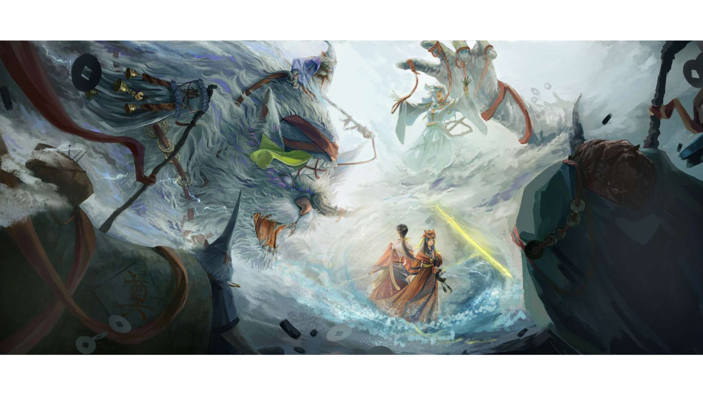
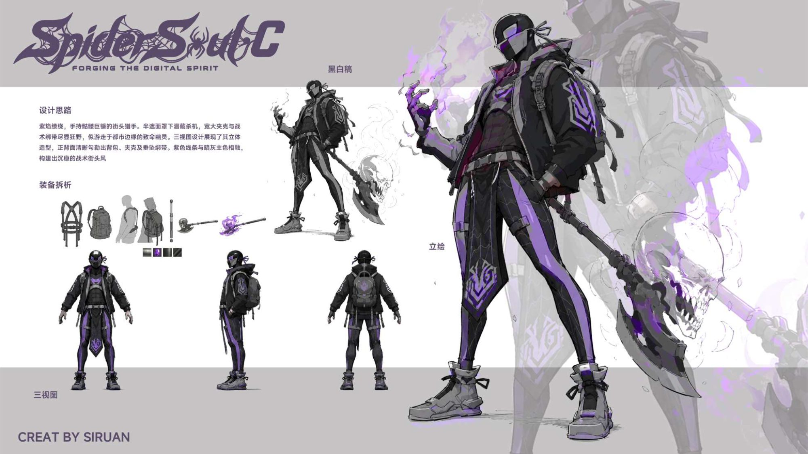

PORTFOLIO · 2023–2027
美术作品
游戏场景原画设计 —— 从世界观构建、氛围原画到 3D 资产拆解落地，覆盖写实、二次元、国风多种风格。
ArtStation
更多高清作品与过程稿
artstation.com/user-2274195 · 持续更新中
🏔️ 场景原画 · 氛围主视觉
从世界观文本出发，确定光影、色调与情绪基调，输出场景氛围主视觉。


🧩 场景设计 · 3D 资产拆解
不止于画 —— 从原画向下拆解模块化资产、三视图与材质规范，并通过 Blender 完成 3D 验证。





🐉 角色设计 · 叙事插画
场景之外的角色与叙事插画实践，保证与世界观、场景风格统一。



💡 我的设计管线：2D → 3D → 4D
每一个场景都遵循完整链路：世界观文本 → 氛围草图 → 原画定稿 → 模块化资产拆解 → Blender 白模 / 渲染验证。环境艺术设计的专业背景让我懂建筑结构与空间叙事，3D 能力让我设计的每一张原画都考虑可落地性，而不是给 3D 同事挖坑。
→ 熟练工具：Photoshop、Blender、Procreate、Illustrator、Substance、Premiere